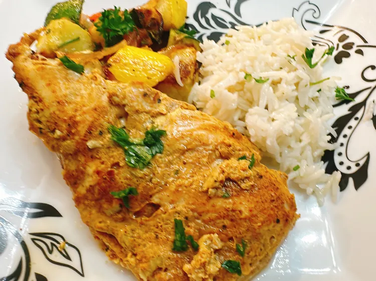

Mediterranean Sheet Pan Chicken

Image credit: allrecipes.com
Big on Nutrients, Bigger on Taste
Craving chicken but not sure where to start? Look no further than this Mediterranean Sheet Pan Chicken, a dish
that has earned a vote of confidence from food lovers worldwide. Marinated in rich Greek yogurt and packed with
vibrant vegetables, it’s a sure-fire way to nourish your body and satisfy your palate. Serve it over a bed of
rice and watch as guests savor every grain—just be prepared to be asked for the recipe before the meal is even
over!
Ingredients:
- 1 pound skinless boneless chicken breasts
- 1 cup plain Greek yogurt
- 1/4 cup dill pickle juice
- 6 garlic cloves, minced
- 2 tablespoons shawarma seasoning, such as Savory Spice Shop® Shawarma Seasoning, or more to taste
Steps
- Slice chicken breasts into pieces about the size of a deck of cards.
- Add yogurt, pickle juice, garlic, and shawarma seasoning to a resealable plastic bag or shallow dish with a
lid. Mix until thoroughly combined. Add chicken; massage the bag to coat chicken breasts. Refrigerate
overnight.
- Preheat the oven to 400 degrees F (200 degrees C) and line a sheet pan with foil. Mist with nonstick spray.
- Remove the chicken pieces from marinade and shake off excess. Place chicken on the prepared sheet pan.
- Bake in the preheated oven until no longer pink at the center and juices run clear, 20 to 25 minutes.
Home